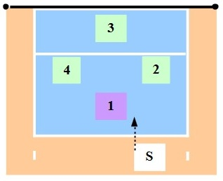
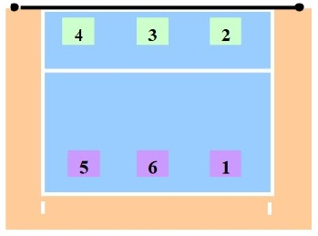
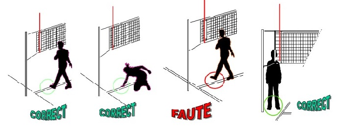

Le Volley-ball a été imaginé par William G. Morgan, professeur d'EPS à l'YMCA (Young Men's Christian Association) en 1895 à l'université d'Holyoke (Massachusetts)sous le nom de « Mintonnette ».
William G. Morgan né à Lockport en 1870, il étudia au « Springfield Collège » où il fit la rencontre de James Naismith (inventeur du Basket-ball en 1891). Par la suite, il s'installa à YMCA d'Auburn (Maine) puis déménagea et entra au YMCA d'Holyoke (Massachusetts) en 1895, comme directeur d'EPS.
Le « Mintonnette » regroupe des éléments du basket-ball, base-ball, tennis et handball mais qui reste moins physique (contact) que le basket-ball et le handball. C'est pendant une démonstration de ce sport, certains avoue avoir remarqué que les joueurs « volleyaient » la balle, ce qui donnera naissance au nom actuel.
Le but du jeu: opposition de 2 équipes sur un terrain de jeu divisé par un filet. Il faut faire tomber la balle de l'autre côté du filet dans le camps adverse à fin de gagner des points.
L'aire de jeu ci-dessous
Les touches de ballon: 3 touches de balles maximum pour renvoyer la balle dans le camps adverse. Le ballon peut etre frapper avec n'importe quelle partie du corps, à condition qu'elle soit bien frappé (pas de porté ou de lancé).
Pour marquer un point: l'équipe adverse fait une faute de service, ou bien ne renvoit la balle, ou encore frappe la balle en dehors de la zone de jeu adverse.
Pour gagner un set: l'équipe marque au total 25 points avec 2 points d'écarts.
Pour gagner un match: l'équipe remporte 3 set. Egalité à 2 set chacuns, il a un autre set (décisif) en 15 points avec 2 points d'écarts.
Position en 4x4 ci dessous Position 6x6 ci dessous
Le service est la mise en jeu du ballon derriere la zone arrière,dans la zone de service
Nous pouvons servir; en manchette, en frappant avec une main après avoir lancé la balle en l'air, ou bien en Smatch (en sautant).
Le contre: a pour but de faire mur à l'attaquant adverse qui s'apprête à attaquer.
L'attaque: a pour but de frapper la balle pour qu'elle atterisse dans le terrain adverse tout en perçant le mur adverse (s'il y a).
Les Pénetrations ci dessous
